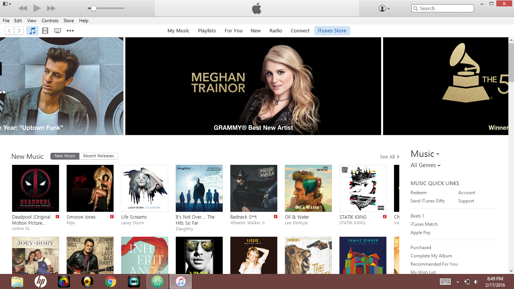
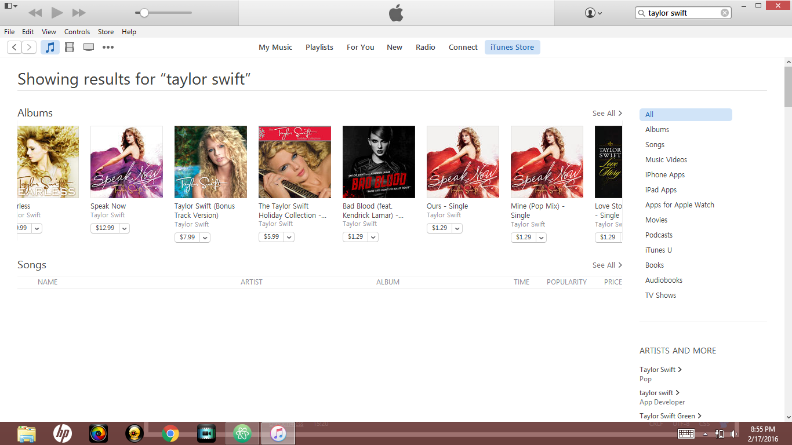
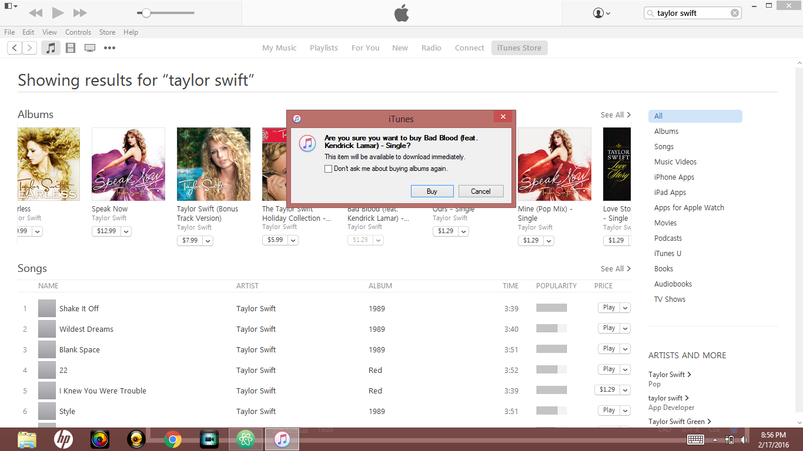

Buying Songs on Itunes
Buying songs on Itunes is a fairly simple process. If you have already input your credit/debit card information, there are just a few simple steps left to purchasing a song on Itunes. The following steps should help you as you make your first few song purchases.
How to Buy Songs
- Open up the Itunes app on your desktop
- Click on the Itunes store button at the top of the screen

- After entering the Itunes store, go to the search bar at the upper right part of the screen
- Type in the name of the artist or song you are looking for and press Enter
- Look through the list the appears for the song you are looking for

- After finding the song you want, click the price button to the right of it
- Another screen should open asking you if you are sure you want to buy this song. If you are sure, press buy

- The song should start to download into your Itunes library
- Find the song in your library and listen to your heart's desire!